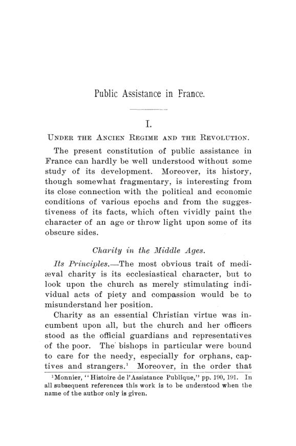

Balch, 1893: a França que ajudava os pobres, mas não lhes devia nada
Leitura: 8 min
Em 1893, Emily Greene Balch dissecou a assistência pública francesa: voluntária, local e financiada sobretudo por doações. Mais de um terço do país não tinha sequer acesso a socorro em casa.


Um notário de Paris, M. Hubert, deixou em testamento 200.000 francos para operários pobres. Impôs uma condição: o dinheiro seria distribuído pelo seu herdeiro, com exclusão expressa do bureau de bienfaisance, o escritório municipal de caridade, e de qualquer autoridade administrativa. A cláusula foi anulada como ilegal. O maire, chefe do município, assumiu o legado, porque a lei francesa o tratava como único representante legítimo dos pobres.
O caso aparece quase no fim de Public Assistance of the Poor in France, monografia de Emily Greene Balch publicada num número duplo das Publications of the American Economic Association, em julho e setembro de 1893. São cerca de 170 páginas. No prefácio, a autora avisa que fez pouco além de exposição simples, que a parte histórica vem de fontes secundárias e que procurou permitir o controle de cada afirmação. Agradece a orientação de Émile Levasseur, durante uma estada em Paris.
Como funcionava um sistema que ninguém era obrigado a manter?
Balch identifica dois princípios. A assistência francesa era, em regra, voluntária, e não uma obrigação imposta à comunidade. E era comunal, isto é, local. O pobre não tinha direito exigível na Justiça. Uma comuna podia não ter serviço algum. A única obrigação legal efetiva recaía sobre duas classes: os loucos perigosos e certas categorias de crianças desamparadas, as enfants assistés.
A razão da recusa era inglesa. A lei dos pobres britânica, com seu imposto local crescente, assombrava os legisladores franceses desde a Assembleia Constituinte. A tradução francesa de Malthus, de 1809, reforçou a ideia de que reconhecer um direito à assistência levava à situação inglesa anterior à reforma. A Segunda República chegou a proclamar o direito ao trabalho e montou oficinas públicas; a autora chama a experiência de desastrosa e de curta duração.
Quem pagava a conta?
A tabela é o retrato fiscal do sistema. O governo central bancava uma fatia mínima e se ocupava sobretudo de regular e fiscalizar. Os fundos estatais distribuídos a instituições de caridade eram tão pulverizados que a média por instituição ficava em 80 francos, o que, segundo a autora, tornava a verba quase inútil antes da reforma de 1888.
Havia também tributos com destino carimbado. O droit des pauvres cobrava um décimo do preço dos ingressos de teatro e um quarto da receita bruta de outros espetáculos. Antes era pago num guichê separado; depois passou a vir embutido no bilhete, e a maioria nem sabia que o pagava. Balch o considera quase tão pouco censurável quanto um imposto pode ser. Nos cemitérios, um terço do preço de cada lote ia para os pobres.
Por que a rede tinha tantos buracos?
Porque a geografia do dinheiro não coincidia com a da pobreza. Em 1886 a França tinha 36.121 comunas; em 1885 havia 14.574 bureaux de bienfaisance. A população coberta por eles era de 22 milhões, num total de 38.153.000. A conclusão do livro é seca: mais de um terço dos franceses não tinha nem a chance de receber socorro em domicílio.
Os hospitais repetiam o padrão. Em 1889 eram 1.679 hospitais e asilos, concentrados nas cidades. Provavelmente nem uma comuna em cinquenta tinha hospital próprio, e um hospital não era obrigado a receber doentes de fora. Ainda assim, em 1878, 24.562 dos 59.997 leitos estavam vazios. A autora atribui a ociosidade, em boa parte, à política estreita de admissão. Conta-se que vizinhos levavam um doente à noite até a porta do hospital mais próximo e o deixavam lá.
A assistência médica rural seguia a mesma lógica de adesão voluntária. Em 1887, 44 departamentos tinham algum serviço de medicina gratuita, alcançando 12.701 de 18.518 comunas. Em alguns departamentos havia um médico para oito ou dez mil habitantes. O serviço dependia quase inteiramente dos votos de verba dos conselhos locais.
A esmola mensal tirava alguém da pobreza?
Balch não esconde a evidência contrária. Cita o relatório do barão de Watteville, de 1847, sobre os bureaux: média anual de 10,42 francos por assistido, dos quais 2,28 iam para despesas de administração. Watteville afirma que, em sessenta anos, nunca viu um único pobre sair da miséria por esse tipo de ajuda. Pior: encontrava nos registros os netos de assistidos de 1802.
“Estourei a bolha que fui ver na França” (“I have burst the bubble I went to see in France”)
A frase é de Edward Denison, especialista inglês em lei dos pobres, que visitou a França em 1868 disposto a admirar o sistema. Voltou desiludido. Para ele, o modelo francês era uma aproximação desajeitada do asilo de trabalho e do imposto dos pobres, sob a aparência de esforço voluntário. A única lição seria a poupança natural do povo.
Por que a caridade privada pagava a maior parte e ainda era vigiada?
Esse é o paradoxo que atravessa o livro. A caridade privada financiava mais da metade do sistema, mas vivia à mercê das autoridades. Pelo artigo 291 do Código Penal, nenhuma associação de mais de 20 pessoas podia se reunir periodicamente sem consentimento do governo. Para possuir bens, precisava de reconhecimento de utilidade pública, e mesmo assim não podia aceitar doação ou legado sem autorização especial.
Os impostos pesavam do mesmo modo. Havia tributo especial sobre bens de mão-morta, e uma lei de 1884 sujeitou as sociedades beneficentes ao imposto de 3% sobre lucros, presumidos em pelo menos 5% do valor de prédios e móveis. Num caso relatado, o Conselho de Estado permitiu à assistência de Paris aceitar só três quartos de um legado e devolveu cerca de 400.000 francos aos primos do testador, inclusive ao que ele excluíra.
O dinheiro privado também era sobretudo herdado. Léon Lallemand calculava que, dos 16 milhões de francos gastos com crianças assistidas, apenas 350.000 vinham de fundações privadas, e ao menos 300.000 deles eram generosidade de gerações passadas. Onde o Estado assumia a obrigação, o doador recuava.
O que Balch recomendava?
Prudência. A autora propõe dois testes para qualquer sistema de assistência: quanto alivia o sofrimento existente e se aumenta ou reduz o sofrimento evitável, isto é, se empobrece ou educa. No primeiro, o resultado francês é insatisfatório: o socorro era magro, arbitrário e proporcional às dotações disponíveis, não às necessidades. Uma aldeia rica podia ter um bureau farto; outra, cheia de pobres, nenhum.
Ainda assim, ela duvida que um sistema completo e simétrico, desenhado de uma vez, fosse melhor. Elogia a lei de 12 de março de 1890, que permitiu às comunas se unirem em sindicatos para manter serviços comuns, por ser prática, elástica e firme. E registra que o Conselho Superior de Assistência Pública já defendia tornar obrigatória a assistência médica no campo. O sistema caminhava para a obrigação; a autora preferia que caminhasse devagar.
Na minha leitura
Na minha leitura, o livro de Balch é um estudo sobre o custo de financiar política social com dotações em vez de orçamento. Quando a receita depende do que doadores deixaram em cada lugar, a cobertura passa a seguir o patrimônio, não a necessidade. Os 644 bureaux sem um franco e os 20 bureaux parisienses com média de quase 240 mil francos são o mesmo sistema, operando exatamente como foi desenhado.
O outro lado também aparece. O Estado francês desconfiava tanto de quem doava que tributava, limitava e confiscava parte do que deveria agradecer. Ao mesmo tempo, onde a obrigação pública se firmava, a doação privada encolhia. O dilema permanece: obrigação legal dá previsibilidade e cobertura, mas tende a expulsar a iniciativa voluntária; voluntariedade preserva flexibilidade, mas deixa buracos que ninguém é obrigado a tapar.
Glossário
- bureau de bienfaisance
- escritório municipal de caridade que distribuía socorro em domicílio, presidido pelo maire.
- comuna
- menor unidade administrativa francesa, equivalente aproximado do município.
- departamento
- divisão administrativa intermediária entre a comuna e o Estado, governada por um prefeito nomeado.
- enfants assistés
- crianças abandonadas ou desamparadas sob tutela da assistência pública, em sua maioria filhos ilegítimos.
- socorro em domicílio
- ajuda dada ao pobre em sua casa, em dinheiro ou espécie, sem internação em asilo.
- mão-morta
- bens de corporações que não mudam de dono por herança e, por isso, eram tributados à parte.
Fontes
- [Public Assistance of the Poor in France]: Preface (pp. 7–8). JSTOR · Internet Archive (PDF)
- Public Assistance of the Poor in France (pp. 9–179). JSTOR · Internet Archive (PDF)
- Sumário da edição no JSTOR: Publications of the American Economic Association, vol. 8, nº 4/5.
Documento em domínio público (EUA, publicado antes de 1931), via JSTOR Early Journal Content e Internet Archive. Resumo e comentário do autor deste site, sem afiliação com a American Economic Association. Encontrou um erro? Escreva: a correção é publicada no próprio texto, com data.
← Nº 37 · Reynolds, 1893: por que o pobre pagava caro para morar mal